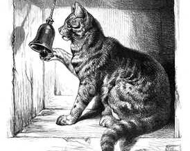

<!DOCTYPE html>
<html>
  <head>
    <title>PSYC2115A Study 1</title>
    <script src="https://ajax.googleapis.com/ajax/libs/jquery/1.11.1/jquery.min.js"></script>
    <script src="jspsych-6.0.2/jspsych.js"></script>
	<script src="jspsych-6.0.2/plugins/jspsych-audio-keyboard-response.js"></script>
	<script src="jspsych-6.0.2/plugins/jspsych-audio-slider-response.js"></script>
	<script src="jspsych-6.0.2/plugins/jspsych-audio-button-response.js"></script>
    <script src="jspsych-6.0.2/plugins/jspsych-html-keyboard-response.js"></script>
    <script src="jspsych-6.0.2/plugins/jspsych-image-keyboard-response.js"></script>
    <script src="jspsych-6.0.2/plugins/jspsych-html-button-response.js"></script>
	<script src="jspsych-6.0.2/plugins/jspsych-survey-multi-choice.js"></script>
	<script src="jspsych-6.0.2/plugins/jspsych-image-button-response.js"></script>
	<script src="jspsych-6.0.2/plugins/jspsych-survey-multi-select.js"></script>
	<script src="jspsych-6.0.2/plugins/jspsych-survey-multi-choice.js"></script>
	<script src="jspsych-6.0.2/plugins/jspsych-fullscreen.js"></script>
	<script src="jspsych-6.0.2/plugins/jspsych-external-html.js"></script>
	<script src="jspsych-6.0.1/plugins/jspsych-srt-text.js"></script>
	<script src="jspsych-6.0.2/plugins/jspsych-survey-likert.js"></script>
    <script src="jspsych-6.0.2/plugins/jspsych-call-function.js"></script>
	<script src="https://cdn.plot.ly/plotly-latest.min.js"></script>

	
    <link href="jspsych-6.0.2/css/jspsych.css" rel="stylesheet" type="text/css">
		
	<link rel="stylesheet" href="https://maxcdn.bootstrapcdn.com/bootstrap/3.4.0/css/bootstrap.min.css">
	<script src="https://ajax.googleapis.com/ajax/libs/jquery/3.4.1/jquery.min.js"></script>
    <script src="https://maxcdn.bootstrapcdn.com/bootstrap/3.4.0/js/bootstrap.min.js"></script>
<style>

.body {
    background-color: LightGray;
}

.jspsych-btn {
	background-color: #FFFFFF;
	border: 2px solid black;
	color: black;
	font-size: 18px;
	border-radius: 20px;
	}

.jspsych-btn:hover,
.jspsych-btn:focus {
	background-color: #808080;
	color: white;
	border: 2px solid black;
	transition: 0.1s;
	}	


	
	
</style>	

  </head>
    <body>
      <script>


//ADD general auditory calibration. Make local version???

//Define timeline and overarching variables
var timeline = []; //specify the jsPsych timeline to which all trials/blocks are pushed
var visNum = 1; //counter for visual trials
var audNum = 1; //counter for auditory trials
var visual_first = Math.round(Math.random()); //1 -> visual first, 0 -> auditory first
var subjID = Math.random().toString(36).substr(2, 15); //randomly generate alpha-numeric string for identifier

//Function to play the calibration sound
function playCalib() {
	var audio = document.getElementById('playerCalib');
	audio.play(); //this actually plays the file
};


//INTRODUCTION / INSTRUCTIONS
var welcome_01 = {
	type:'html-button-response',
	stimulus: '<p style="color:#e31838;"><b>PSYC 2115A<br>Portfolio 1 Study</b></p>' +
			  '<p>Welcome to the first portfolio study! Before you begin, please make sure that you are in a quiet environment that is relatively free of distractions.<br>The study will take approximately 40 minutes to complete.</p>' +
			  '<p>This study will give you a first-hand feel for <em><b>signal detection theory</b></em>. Remember, please try your best on the study, as this will make answering the questions on the reflection worksheet much easier.</p>' +
			  '<p>To receive more specific instructions, press the button below.</p>',
	choices: ['Continue'],
	post_trial_gap: 250
};

var welcome_02 = {
	type:'html-button-response',
	stimulus: '<p>You will actually be completing two "mini studies" related to signal detection theory.</p>' +
			  '<p>One of the studies is visual, and involves looking for a particular person in a noisy background.</p>' +
			  '<p>The other study is auditory, and involves listening for a particular sound in a noisy background.</p>' +
			  '<p>To reveal which mini study you will complete first, press the button below.</p>',
	choices: ['Continue'],
	post_trial_gap: 250
};


//VISUAL SDT TASK

//variables for tallying performance
var visHIT = 0;
var visCR = 0;
var visFA = 0;
var visMISS = 0;
var respType;


//Image preloading
var preload_img = [
'img/00/01.jpg', 'img/00/02.jpg', 'img/00/03.jpg', 'img/00/04.jpg', 'img/00/05.jpg', 'img/00/06.jpg', 'img/00/07.jpg', 'img/00/08.jpg', 'img/00/09.jpg', 'img/00/10.jpg',
'img/00/11.jpg', 'img/00/12.jpg', 'img/00/13.jpg', 'img/00/14.jpg', 'img/00/15.jpg', 'img/00/16.jpg', 'img/00/17.jpg', 'img/00/18.jpg', 'img/00/19.jpg', 'img/00/20.jpg',
'img/00/21.jpg', 'img/00/22.jpg', 'img/00/23.jpg', 'img/00/24.jpg', 'img/00/25.jpg', 'img/00/26.jpg', 'img/00/27.jpg', 'img/00/28.jpg', 'img/00/29.jpg', 'img/00/30.jpg',
'img/05/01.jpg', 'img/05/02.jpg', 'img/05/03.jpg', 'img/05/04.jpg', 'img/05/05.jpg', 'img/05/06.jpg', 'img/05/07.jpg', 'img/05/08.jpg', 'img/05/09.jpg', 'img/05/10.jpg',
'img/05/11.jpg', 'img/05/12.jpg', 'img/05/13.jpg', 'img/05/14.jpg', 'img/05/15.jpg', 'img/10/11.jpg', 'img/10/12.jpg', 'img/10/13.jpg', 'img/10/14.jpg', 'img/05/15.jpg',
'img/10/01.jpg', 'img/10/02.jpg', 'img/10/03.jpg', 'img/10/04.jpg', 'img/10/05.jpg', 'img/10/06.jpg', 'img/10/07.jpg', 'img/10/08.jpg', 'img/10/09.jpg', 'img/10/10.jpg',
'img/gosling-original.png', 
]


//Timeline Variables
var vis_SDT_vars = [
{stim: preload_img[0], type: 'noise', corRESP: 0},
{stim: preload_img[1], type: 'noise', corRESP: 0},
{stim: preload_img[2], type: 'noise', corRESP: 0},
{stim: preload_img[3], type: 'noise', corRESP: 0},
{stim: preload_img[4], type: 'noise', corRESP: 0},
{stim: preload_img[5], type: 'noise', corRESP: 0},
{stim: preload_img[6], type: 'noise', corRESP: 0},
{stim: preload_img[7], type: 'noise', corRESP: 0},
{stim: preload_img[8], type: 'noise', corRESP: 0},
{stim: preload_img[9], type: 'noise', corRESP: 0},
{stim: preload_img[10], type: 'noise', corRESP: 0},
{stim: preload_img[11], type: 'noise', corRESP: 0},
{stim: preload_img[12], type: 'noise', corRESP: 0},
{stim: preload_img[13], type: 'noise', corRESP: 0},
{stim: preload_img[14], type: 'noise', corRESP: 0},
{stim: preload_img[15], type: 'noise', corRESP: 0},
{stim: preload_img[16], type: 'noise', corRESP: 0},
{stim: preload_img[17], type: 'noise', corRESP: 0},
{stim: preload_img[18], type: 'noise', corRESP: 0},
{stim: preload_img[19], type: 'noise', corRESP: 0},
{stim: preload_img[20], type: 'noise', corRESP: 0},
{stim: preload_img[21], type: 'noise', corRESP: 0},
{stim: preload_img[22], type: 'noise', corRESP: 0},
{stim: preload_img[23], type: 'noise', corRESP: 0},
{stim: preload_img[24], type: 'noise', corRESP: 0},
{stim: preload_img[25], type: 'noise', corRESP: 0},
{stim: preload_img[26], type: 'noise', corRESP: 0},
{stim: preload_img[27], type: 'noise', corRESP: 0},
{stim: preload_img[28], type: 'noise', corRESP: 0},
{stim: preload_img[29], type: 'noise', corRESP: 0},
{stim: preload_img[30], type: 'signal_05', corRESP: 1},
{stim: preload_img[31], type: 'signal_05', corRESP: 1},
{stim: preload_img[32], type: 'signal_05', corRESP: 1},
{stim: preload_img[33], type: 'signal_05', corRESP: 1},
{stim: preload_img[34], type: 'signal_05', corRESP: 1},
{stim: preload_img[35], type: 'signal_05', corRESP: 1},
{stim: preload_img[36], type: 'signal_05', corRESP: 1},
{stim: preload_img[37], type: 'signal_05', corRESP: 1},
{stim: preload_img[38], type: 'signal_05', corRESP: 1},
{stim: preload_img[39], type: 'signal_05', corRESP: 1},
{stim: preload_img[40], type: 'signal_05', corRESP: 1},
{stim: preload_img[41], type: 'signal_05', corRESP: 1},
{stim: preload_img[42], type: 'signal_05', corRESP: 1},
{stim: preload_img[43], type: 'signal_05', corRESP: 1},
{stim: preload_img[44], type: 'signal_05', corRESP: 1},
{stim: preload_img[45], type: 'signal_10', corRESP: 1},
{stim: preload_img[46], type: 'signal_10', corRESP: 1},
{stim: preload_img[47], type: 'signal_10', corRESP: 1},
{stim: preload_img[48], type: 'signal_10', corRESP: 1},
{stim: preload_img[49], type: 'signal_10', corRESP: 1},
{stim: preload_img[50], type: 'signal_10', corRESP: 1},
{stim: preload_img[51], type: 'signal_10', corRESP: 1},
{stim: preload_img[52], type: 'signal_10', corRESP: 1},
{stim: preload_img[53], type: 'signal_10', corRESP: 1},
{stim: preload_img[54], type: 'signal_10', corRESP: 1},
{stim: preload_img[55], type: 'signal_10', corRESP: 1},
{stim: preload_img[56], type: 'signal_10', corRESP: 1},
{stim: preload_img[57], type: 'signal_10', corRESP: 1},
{stim: preload_img[58], type: 'signal_10', corRESP: 1},
{stim: preload_img[59], type: 'signal_10', corRESP: 1}
];

//Instructions
var vis_welcome = {
	type: 'html-button-response',
	stimulus: '<p style="color:#e31838;"><b>Visual Signal Detection Task</b></p>' +
			  '<p></p>' + 	
			  '<p>Celebrity Watch: London Edition!<br><em>Greetings, fellow paparazzi! We have received word that London&apos;s own <b>Ryan Gosling</b> is back in town.</p>' +
			  '<p>However, he does not want to attract too much attention and thus prefers to only come out in blizzard-like conditions.<br>Dr. Van Hedger (aka Gosling superfan #1) ventured out into the blizzard last night to snap 60 pictures, but all of them are pretty noisy.</p>' +
			  '<p>Your task is to go through these pictures and determine which ones contain Ryan Gosling.<br>When you are ready to begin, press the button below.</p></em>',
	choices: ['Begin'],
	post_trial_gap: 250
}

//Counter
var vis_counter = {
	type: 'html-button-response',
	stimulus: function(){return '<p>Picture '+visNum+' of 60</p>';},
	choices: ['View'],
	post_trial_gap: 250,
	data: {modality: 'visual'},
	on_finish: function(){
		visNum += 1;
	}
};


//Image presentation, decision
var vis_decision = {
	type: 'image-button-response',
	stimulus: jsPsych.timelineVariable('stim'),
	choices: ['<p>Gosling is absent...<br><b>discard it!</b></p>', '<p>Gosling is present...<br><b>it is a keeper!</b></p>'],
	data: {correct_response: jsPsych.timelineVariable('corRESP'), modality: 'visual', type: jsPsych.timelineVariable('type')},
	on_finish: function(data){		
		var decision = jsPsych.data.get().last(1).values()[0].button_pressed; //0 or 1 depending on the button pressed
		//caculate SDT statistics
		if(decision == data.correct_response && (data.type == 'signal_05' || data.type == 'signal_10')){
			visHIT += 1;
			respType = 'H';
			} else if(decision == data.correct_response && data.type == 'noise') {
			visCR += 1;
			respType = 'CR';
			} else if(decision != data.correct_response && data.type == 'noise') {
			visFA += 1;
			respType = 'FA';
			} else {
			visMISS += 1;
			respType = 'M';
			}
			console.log(respType);
		jsPsych.data.addDataToLastTrial({
			designation: "sdt-visual",
			RESP: respType		
		});		
	}
};


var main_vis_proc = {
	timeline: [vis_counter, vis_decision],
	timeline_variables: vis_SDT_vars,
	randomize_order: true
};

//short break screen
var short_break = {
	type: 'html-button-response',
	stimulus: '<p>You may take a short break if you wish.</p><p>When you are ready to continue onto the second and final "mini experiment", press the button below.</p>',
	choices: ['Continue']
};

//AUDITORY SDT TASK

//variables for tallying performance
var audHIT = 0;
var audCR = 0;
var audFA = 0;
var audMISS = 0;


//Image preloading
var preload_aud = [
'aud/00/01.wav', 'aud/00/02.wav', 'aud/00/03.wav', 'aud/00/04.wav', 'aud/00/05.wav', 'aud/00/06.wav', 'aud/00/07.wav', 'aud/00/08.wav', 'aud/00/09.wav', 'aud/00/10.wav',
'aud/00/11.wav', 'aud/00/12.wav', 'aud/00/13.wav', 'aud/00/14.wav', 'aud/00/15.wav', 'aud/00/16.wav', 'aud/00/17.wav', 'aud/00/18.wav', 'aud/00/19.wav', 'aud/00/20.wav',
'aud/00/21.wav', 'aud/00/22.wav', 'aud/00/23.wav', 'aud/00/24.wav', 'aud/00/25.wav', 'aud/00/26.wav', 'aud/00/27.wav', 'aud/00/28.wav', 'aud/00/29.wav', 'aud/00/30.wav',
'aud/05/01.wav', 'aud/05/02.wav', 'aud/05/03.wav', 'aud/05/04.wav', 'aud/05/05.wav', 'aud/05/06.wav', 'aud/05/07.wav', 'aud/05/08.wav', 'aud/05/09.wav', 'aud/05/10.wav',
'aud/05/11.wav', 'aud/05/12.wav', 'aud/05/13.wav', 'aud/05/14.wav', 'aud/05/15.wav', 'aud/10/11.wav', 'aud/10/12.wav', 'aud/10/13.wav', 'aud/10/14.wav', 'aud/05/15.wav',
'aud/10/01.wav', 'aud/10/02.wav', 'aud/10/03.wav', 'aud/10/04.wav', 'aud/10/05.wav', 'aud/10/06.wav', 'aud/10/07.wav', 'aud/10/08.wav', 'aud/10/09.wav', 'aud/10/10.wav',
'aud/doorbell.wav', 'aud/calibration.wav'
]

//Timeline Variables
var aud_SDT_vars = [
{stim: preload_aud[0], type: 'noise', corRESP: 0},
{stim: preload_aud[1], type: 'noise', corRESP: 0},
{stim: preload_aud[2], type: 'noise', corRESP: 0},
{stim: preload_aud[3], type: 'noise', corRESP: 0},
{stim: preload_aud[4], type: 'noise', corRESP: 0},
{stim: preload_aud[5], type: 'noise', corRESP: 0},
{stim: preload_aud[6], type: 'noise', corRESP: 0},
{stim: preload_aud[7], type: 'noise', corRESP: 0},
{stim: preload_aud[8], type: 'noise', corRESP: 0},
{stim: preload_aud[9], type: 'noise', corRESP: 0},
{stim: preload_aud[10], type: 'noise', corRESP: 0},
{stim: preload_aud[11], type: 'noise', corRESP: 0},
{stim: preload_aud[12], type: 'noise', corRESP: 0},
{stim: preload_aud[13], type: 'noise', corRESP: 0},
{stim: preload_aud[14], type: 'noise', corRESP: 0},
{stim: preload_aud[15], type: 'noise', corRESP: 0},
{stim: preload_aud[16], type: 'noise', corRESP: 0},
{stim: preload_aud[17], type: 'noise', corRESP: 0},
{stim: preload_aud[18], type: 'noise', corRESP: 0},
{stim: preload_aud[19], type: 'noise', corRESP: 0},
{stim: preload_aud[20], type: 'noise', corRESP: 0},
{stim: preload_aud[21], type: 'noise', corRESP: 0},
{stim: preload_aud[22], type: 'noise', corRESP: 0},
{stim: preload_aud[23], type: 'noise', corRESP: 0},
{stim: preload_aud[24], type: 'noise', corRESP: 0},
{stim: preload_aud[25], type: 'noise', corRESP: 0},
{stim: preload_aud[26], type: 'noise', corRESP: 0},
{stim: preload_aud[27], type: 'noise', corRESP: 0},
{stim: preload_aud[28], type: 'noise', corRESP: 0},
{stim: preload_aud[29], type: 'noise', corRESP: 0},
{stim: preload_aud[30], type: 'signal_05', corRESP: 1},
{stim: preload_aud[31], type: 'signal_05', corRESP: 1},
{stim: preload_aud[32], type: 'signal_05', corRESP: 1},
{stim: preload_aud[33], type: 'signal_05', corRESP: 1},
{stim: preload_aud[34], type: 'signal_05', corRESP: 1},
{stim: preload_aud[35], type: 'signal_05', corRESP: 1},
{stim: preload_aud[36], type: 'signal_05', corRESP: 1},
{stim: preload_aud[37], type: 'signal_05', corRESP: 1},
{stim: preload_aud[38], type: 'signal_05', corRESP: 1},
{stim: preload_aud[39], type: 'signal_05', corRESP: 1},
{stim: preload_aud[40], type: 'signal_05', corRESP: 1},
{stim: preload_aud[41], type: 'signal_05', corRESP: 1},
{stim: preload_aud[42], type: 'signal_05', corRESP: 1},
{stim: preload_aud[43], type: 'signal_05', corRESP: 1},
{stim: preload_aud[44], type: 'signal_05', corRESP: 1},
{stim: preload_aud[45], type: 'signal_10', corRESP: 1},
{stim: preload_aud[46], type: 'signal_10', corRESP: 1},
{stim: preload_aud[47], type: 'signal_10', corRESP: 1},
{stim: preload_aud[48], type: 'signal_10', corRESP: 1},
{stim: preload_aud[49], type: 'signal_10', corRESP: 1},
{stim: preload_aud[50], type: 'signal_10', corRESP: 1},
{stim: preload_aud[51], type: 'signal_10', corRESP: 1},
{stim: preload_aud[52], type: 'signal_10', corRESP: 1},
{stim: preload_aud[53], type: 'signal_10', corRESP: 1},
{stim: preload_aud[54], type: 'signal_10', corRESP: 1},
{stim: preload_aud[55], type: 'signal_10', corRESP: 1},
{stim: preload_aud[56], type: 'signal_10', corRESP: 1},
{stim: preload_aud[57], type: 'signal_10', corRESP: 1},
{stim: preload_aud[58], type: 'signal_10', corRESP: 1},
{stim: preload_aud[59], type: 'signal_10', corRESP: 1}
]


//Instructions
var aud_calib = {
	type: 'html-button-response',
	stimulus: '<p>You will now complete the auditory "mini study". Before you begin, please click on the blue button to hear a sound. <br>As you listen to the sound, please adjust your computer volume to a comfortable listening level.</p>'+
			  	"<p><input class='jspsych-btn' style='background-color:blue;color:yellow' id='calib' type='button' value='Volume Calibration' onclick='playCalib()'><audio id='playerCalib' src='aud/calibration.wav'></audio></input></p>" +
				'<p>When you have adjusted your volume such that the sound is being played at a comfortable level, you may continue.</p>',
	choices: ['Continue'],
	post_trial_gap: 250
}


var aud_welcome = {
	type: 'html-button-response',
	stimulus: '<p style="color:#e31838;"><b>Auditory Signal Detection Task: The Doorbell Game</b></p>' +
			  '<p></p><br>' + 	
			  '<p><em>You are a world-famous sensation and perception researcher and, to your delight, <b>Cat Fancy Magazine</b> wants to interview you about the visual acuity of cats! (Life goal: achieved.)</p>' +
			  '<p>However, Cat Fancy is very old school. They insist on sending out a reporter to interview you in person. The interviewer is to arrive at 9 AM.<br>Alas, you miss your alarm the morning of the interview and wake up at 8:40 AM</p>' +
			  '<p>You want to take a shower before the interview but worry that you will miss the ring of the doorbell from the interviewer. So, you decide to shower but keep an ear open for the sound of the doorbell.<br>In this task, you will hear 60 total sounds, and it is your job to determine whether you hear the faint ring of a doorbell amid the shower noise.</p></em>',
	choices: ['Begin'],
	post_trial_gap: 250
}


//Counter
var aud_counter = {
	type: 'html-button-response',
	stimulus: function(){return '<p>Sound '+audNum+' of 60</p>';},
	choices: ['Listen'],
	post_trial_gap: 250,
	data: {modality: 'auditory'},
	on_finish: function(){
		visNum += 1;
	}
};


//Sound presentation, decision
var aud_decision = {
	type: 'audio-button-response',
	stimulus: jsPsych.timelineVariable('stim'),
	choices: ['<p>No doorbell...<br><b>no rush.</b></p>', '<p>Doorbell...<br><b>interview time!</b></p>'],
	data: {correct_response: jsPsych.timelineVariable('corRESP'), modality: 'auditory', type: jsPsych.timelineVariable('type')},
	on_finish: function(data){		
		var decision = jsPsych.data.get().last(1).values()[0].button_pressed; //0 or 1 depending on the button pressed
		//caculate SDT statistics
		if(decision == data.correct_response && (data.type == 'signal_05' || data.type == 'signal_10')){
			audHIT += 1;
			respType = 'H';
			} else if(decision == data.correct_response && data.type == 'noise') {
			audCR += 1;
			respType = 'CR';
			} else if(decision != data.correct_response && data.type == 'noise') {
			audFA += 1;
			respType = 'FA';
			} else {
			audMISS += 1;
			respType = 'M';
			}
		jsPsych.data.addDataToLastTrial({
			designation: "sdt-auditory",
			RESP: respType		
		});		
	}
};


var main_aud_proc = {
	timeline: [aud_counter, aud_decision],
	timeline_variables: aud_SDT_vars,
	randomize_order: true
}; 

//variables for representing the percentages of hits/false alarms/misses/correct rejects
var visHITp;
var visMISSp;
var visCRp;
var visFAp;

var audHITp;
var audMISSp;
var audCRp;
var audFAp;

//Wrap-Up  and Visualization
var backup_data = {
	type: 'html-keyboard-response',
	stimulus: '<p>Calculating your results...</p>',
	choices: jsPsych.NO_KEYS,
	trial_duration: 1000,
	on_finish: function() {
          var csvData = jsPsych.data.get().csv(); //this is the csv data
          console.log(csvData);
          var formData = {
            exp: "P2115A_01", 
            subj: subjID,
            results: csvData
          };
          $.post(
            "https://svanhedger.pythonanywhere.com/data",
            formData
          );
    }
};

var goodbye = {
    type: "html-button-response",
    stimulus: "This concludes the study.",
	choices: ['See my results'],
	on_finish: function(data){
		//establish the final tallies for SDT across visual/auditory tasks, append to data as 'SUMMARY'
		visHITp = ((visHIT/30) * 100).toFixed(2);
		visMISSp = ((visMISS/30) * 100).toFixed(2);
		visCRp = ((visCR/30) * 100).toFixed(2);
		visFAp = ((visFA/30) * 100).toFixed(2);
		
		audHITp = ((audHIT/30) * 100).toFixed(2);
		audMISSp = ((audMISS/30) * 100).toFixed(2);
		audCRp = ((audCR/30) * 100).toFixed(2);
		audFAp = ((audFA/30) * 100).toFixed(2);
		
		jsPsych.data.addDataToLastTrial({
			designation: "SUMMARY",
			V_H: visHIT,
			V_M: visMISS,
			V_CR: visCR,
			V_FA: visFA,
			A_H: audHIT,
			A_M: audMISS,
			A_CR: audCR,
			A_FA: audFA				
		});	
		}
    };

var sum_results = {
	type: 'html-keyboard-response',
	stimulus: function(){return '<p><b>Visual Task</b><br><em>Here is how you did looking for Ryan Gosling:</em></p><p><b style="color:green">Hits:</b> '+visHIT+' out of 30 ('+visHITp+'% hit rate).<br><p><b style="color:red">Misses:</b> '+visMISS+' out of 30 ('+visMISSp+'% miss rate).<br><p><b style="color:orange">False Alarms:</b> '+visFA+' out of 30 ('+visFAp+'% false alarm rate).<br> <p><b style="color:#2F899C">Correct Rejections:</b> '+visCR+' out of 30 ('+visCRp+'% correct reject rate).</p>' +
			'<p><b>Auditory Task</b><br><em>Here is how you did listening for the doorbell:</em></p><p><b style="color:green">Hits:</b> '+audHIT+' out of 30 ('+audHITp+'% hit rate).<br><p><b style="color:red">Misses:</b> '+audMISS+' out of 30 ('+audMISSp+'% miss rate).<br><p><b style="color:orange">False Alarms:</b> '+audFA+' out of 30 ('+audFAp+'% false alarm rate).<br> <p><b style="color:#2F899C">Correct Rejections:</b> '+audCR+' out of 30 ('+audCRp+'% correct reject rate).</p>' +
			'<p><br>Finally, here is your completion code: <b>'+subjID+'</b></p><p><br><em>Important: Please copy the completion code over to the first page of the guided reflection!</em></p>';},
	choices: jsPsych.NO_KEYS
}
 
//Push everything to the timeline
if(visual_first == 1){
	var exp_final = {
		timeline: [welcome_01, welcome_02, vis_welcome, main_vis_proc, short_break, aud_calib, aud_welcome, main_aud_proc, backup_data, goodbye, sum_results] // timelime with visual first
		};
	} else {
	var exp_final = {
		timeline: [welcome_01, welcome_02, aud_calib, aud_welcome, main_aud_proc, short_break, vis_welcome, main_vis_proc, backup_data, goodbye, sum_results] // timelime with auditory first
		};
	};

timeline.push(exp_final); //push the final experiment array to the timeline

 jsPsych.init({
    timeline: timeline,
	preload_images: preload_img, 
	preload_audio: preload_aud
    });
	
    </script>
  </body>
</html>
